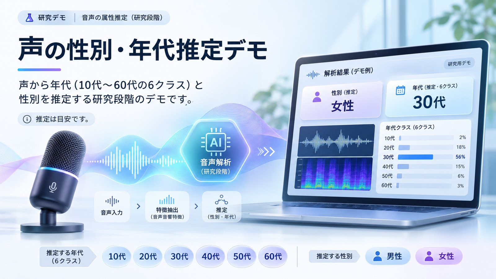

2. 声の入力
次の文を読み上げてください。
今日は良い天気ですね。明日も晴れるといいなと思います。
録音できない場合は、ボイスメモ等で録音した音声ファイルでも推定できます。
推定結果
まだ推定していません。

初回はモデルのダウンロードに約380MBの通信が発生します。Wi-Fi 環境での利用を推奨します。モデルはブラウザの中だけで実行され、音声が外部へ送信されることはありません。
モデルは音響モデル WavLM をファインチューニングしたもので、年代と性別を同時に出力します。学習と評価には Common Voice 日本語版を用いました。テスト話者749名での測定では、年代の正解率 43.3%（±1年代まで含めると 88.5%）、性別の正解率 96.3% でした。研究段階のデモであり、推定は目安です。
詳しい方法と結果は、Qiita の記事「声から年齢は推定できるか ― Common Voice 日本語版で年代分類を試した結果」と、note の記事「声を聞いただけで、年齢はわかるのか」にまとめています。